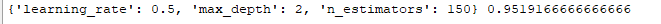

尝试用sklearn进行GBDT实战，选择模型最优参数，而后介绍GradientBoostingClassifier实现类
- GBDT代码实战
- sklearn之GradientBoostingClassifier类
GBDT代码实战
原理篇戳这里
一个简单的例子，运用sklearn中算法实现类GradientBoostingClassifier实现GBDT分类，并选出最优参数
例子放在Github上，可以直接fork。
1
2
3
4
5
6
7
8
9
10
11
12
13
14
15
16
17
18
19
20
21
22
23
24
25
26
27
28
29
30
31
32
33
34
35
36
37
38
39
40
41
42
43
44
45
|
'''
Created on 2018年1月17日
@author: Scorpio.Lu
'''
'''
GBDT有分类和回归，回归是GradientBoostingRegressor
示例给出的是分类
GradientBoostingClassifier支持二分类和多分类。
'''
from sklearn.datasets import make_hastie_10_2
from sklearn.ensemble import GradientBoostingClassifier
from sklearn.grid_search import GridSearchCV
X,y=make_hastie_10_2(random_state=42)
'''
调参：
loss：损失函数。有deviance和exponential两种。deviance是采用对数似然，exponential是指数损失，后者相当于AdaBoost。
n_estimators:最大弱学习器个数，默认是100，调参时要注意过拟合或欠拟合，一般和learning_rate一起考虑。
learning_rate:步长，即每个弱学习器的权重缩减系数，默认为0.1，取值范围0-1，当取值为1时，相当于权重不缩减。较小的learning_rate相当于更多的迭代次数。
subsample:子采样，默认为1，取值范围(0,1]，当取值为1时，相当于没有采样。小于1时，即进行采样，按比例采样得到的样本去构建弱学习器。这样做可以防止过拟合，但是值不能太低，会造成高方差。
init：初始化弱学习器。不使用的话就是第一轮迭代构建的弱学习器.如果没有先验的话就可以不用管
由于GBDT使用CART回归决策树。以下参数用于调优弱学习器，主要都是为了防止过拟合
max_feature：树分裂时考虑的最大特征数，默认为None，也就是考虑所有特征。可以取值有：log2,auto,sqrt
max_depth：CART最大深度，默认为None
min_sample_split：划分节点时需要保留的样本数。当某节点的样本数小于某个值时，就当做叶子节点，不允许再分裂。默认是2
min_sample_leaf：叶子节点最少样本数。如果某个叶子节点数量少于某个值，会同它的兄弟节点一起被剪枝。默认是1
min_weight_fraction_leaf：叶子节点最小的样本权重和。如果小于某个值，会同它的兄弟节点一起被剪枝。一般用于权重变化的样本。默认是0
min_leaf_nodes：最大叶子节点数
'''
parameters = {
'n_estimators':[50,100,150],
'learning_rate':[0.5,1,1.5],
'max_depth':[1,2,3]
}
estimator=GradientBoostingClassifier(random_state=42)
best_clf=GridSearchCV(estimator=estimator, param_grid=parameters, cv=10).fit(X, y)
print(best_clf.best_params_,best_clf.best_score_ )
|
运行完成后，你会看到：

GradientBoostingClassifier类
下面具体介绍一下GradientBoostingClassifier类。
GradientBoostingClassifier在sklearn.ensemble包中，构造函数如下：
GradientBoostingClassifier(loss=’deviance’, learning_rate=0.1, n_estimators=100, subsample=1.0, criterion=’friedman_mse’, min_samples_split=2, min_samples_leaf=1, min_weight_fraction_leaf=0.0, max_depth=3, min_impurity_decrease=0.0, min_impurity_split=None, init=None, random_state=None, max_features=None, verbose=0, max_leaf_nodes=None, warm_start=False, presort=’auto’)
各个参数已经在代码里介绍过了，这里不再叙述。
另外有方法：
| Methods |
|
| decision_function(X) |
计算输入X的决策函数值 |
| fit(X,y,sample_weight) |
拟合损失函数，构建强预测模型 |
| get_params() |
获取模型参数 |
| predict() |
预测样本属于哪一类 |
| predict_log_proba(X) |
计算输入X的类别log概率 |
| predict_proba(X) |
计算输入X的类别概率值 |
| score(X, y, sample_weight) |
返回给定输入样本集X的平均准确度 |
另外一些方法请见官网sklearn-GBDT
作者 [Scorpio.Lu]
2017 年 1 月 19 日
转载请注明出处！